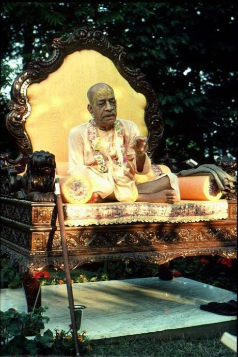

"I am much more than any King"

Rāmesvara Swāmi : Prabhupāda, you appear to us to be just like a king.
Prabhupāda : I am much more than any King..
Ramesvara Swami : When Srila Prabhupada was about to leave Los Angeles for a world tour in 1976, he called some of the devotees to his room. "Open my almira," he said to Ramesvara Swami, who opened the metal locker containing Srila Prabhupada's clothes "Do you see those kurtas?" said Prabhupada. "Pick one." Ramesvara Swami picked out a bright orange one. "You like that one?" Prabhupada asked. "Yes." "All right. That is for you." Ramesvara was overwhelmed to receive the treasure of a remnant of Prabhupada's clothes. Other devotees also received clothes and gifts from Prabhupada's hand. Then it was almost time for him to go to the airport. With graceful artistry, Prabhupada sat at his desk and applied the Vaishnava tilaka to his forehead. Ramesvara Swami thought to himself that everything about Prabhupada, the way he sat or walked, the way he dressed, and the way he put on his tilaka, was all majestic and opulent. As Prabhupada stood to leave the room, Ramesvara voiced his appreciation. "Prabhupada, you appear to us to be just like a king." "I am much more than any king," said Prabhupada, and then he walked downstairs. There he was met by a hundred devotees who accompanied him to the airport as he began another world tour.
Ref ~ Prabhupāda Nectar By Ramesvara swami.